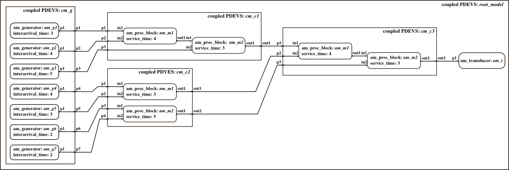
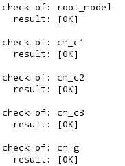

Initialization Script: Assembly Line
Inits a complex model of an assembly line. Example is taken from master thesis of T. Schwatinski. Seven generators with different intergeneration times send workpieces to processing blocks. Processing blocks assemble two parts and send them to next processing blocks where more parts are added. A transducer counts completed workpieces.
Contents
Basic models are taken from the "Assembly Line" example, folder DEVSPATH/01-modelbase/0-assembly_line.
Call: init_assembly_line
File: DEVSPATH/02-examples/discrete/0-assembly_line/init_assembly_line.m

Model Structure
Preparation
global SIMUSTOP % to stop simulation by condition SIMUSTOP = 0; global HYBRID HYBRID = 0; % discrete-only simulation elapsed = 0;
Create the Model
Atomic models' classes: am_proc_block, am_generator, am_transducer.
% Components for coupled model cm_c1 inistates = struct('phase','passive','sigma',inf,'q1',0,'q2',0); service_time = 4; % system parameter am_m1 = am_proc_block('am_m1',inistates,elapsed,service_time); inistates = struct('phase','passive','sigma',inf,'q1',0,'q2',0); service_time = 3; % system parameter am_m2 = am_proc_block('am_m2',inistates,elapsed,service_time); % Coupled model cm_c1 x_cm_c1 = {'p1','p2','p3'}; y_cm_c1 = {'out1'}; cm_c1 = coupled('cm_c1',x_cm_c1,y_cm_c1); addcomponents(cm_c1,{am_m1,am_m2}); Zid_cm_c1 = {'parent','p1','am_m1','in1';... 'parent','p2','am_m1','in2';... 'parent','p3','am_m2','in2';... 'am_m1','out1','am_m2','in1';... 'am_m2','out1','parent','out1'}; cm_c1.set_Zid( Zid_cm_c1); % Components for coupled model cm_c2 inistates = struct('phase','passive','sigma',inf,'q1',0,'q2',0); service_time = 3; % system parameter am_m5 = am_proc_block('am_m1',inistates,elapsed,service_time); inistates = struct('phase','passive','sigma',inf,'q1',0,'q2',0); service_time = 5; % system parameter am_m6 = am_proc_block('am_m2',inistates,elapsed,service_time); % Coupled model cm_c2 x_cm_c2 = {'p1','p2','p3','p4'}; y_cm_c2 = {'out1','out2'}; cm_c2 = coupled('cm_c2',x_cm_c2,y_cm_c2); addcomponents(cm_c2,{am_m5,am_m6}); Zid_cm_c2 = {'parent','p1','am_m1','in1';... 'parent','p2','am_m1','in2';... 'parent','p3','am_m2','in1';... 'parent','p4','am_m2','in2';... 'am_m1','out1','parent','out1';... 'am_m2','out1','parent','out2'}; set_Zid(cm_c2, Zid_cm_c2); % Components for coupled model cm_c3 inistates = struct('phase','passive','sigma',inf,'q1',0,'q2',0); service_time = 4; % system parameter am_m3 = am_proc_block('am_m1',inistates,elapsed,service_time); inistates = struct('phase','passive','sigma',inf,'q1',0,'q2',0); service_time = 3; % system parameter am_m4 = am_proc_block('am_m2',inistates,elapsed,service_time); % Coupled model cm_c3 x_cm_c3 = {'p1','p2','p3'}; y_cm_c3 = {'out1'}; cm_c3 = coupled('cm_c3',x_cm_c3,y_cm_c3); addcomponents(cm_c3,{am_m3,am_m4}); Zid_cm_c3 = {'parent','p1','am_m1','in1';... 'parent','p2','am_m1','in2';... 'parent','p3','am_m2','in2';... 'am_m1','out1','am_m2','in1';... 'am_m2','out1','parent','out1'}; set_Zid(cm_c3, Zid_cm_c3); % Components for coupled model cm_g interarrival_time1 = 3; % system parameter inistates1 = struct('counter',0); am_g1 = am_generator('am_g1',inistates1,elapsed,interarrival_time1); interarrival_time2 = 4; % system parameter inistates2 = struct('counter',0); am_g2 = am_generator('am_g2',inistates2,elapsed,interarrival_time2); interarrival_time3 = 5; % system parameter inistates3 = struct('counter',0); am_g3 = am_generator('am_g3',inistates3,elapsed,interarrival_time3); interarrival_time4 = 4; % system parameter inistates4 = struct('counter',0); am_g4 = am_generator('am_g4',inistates4,elapsed,interarrival_time4); interarrival_time5 = 3; % system parameter inistates5 = struct('counter',0); am_g5 = am_generator('am_g5',inistates5,elapsed,interarrival_time5); interarrival_time6 = 2; % system parameter inistates6 = struct('counter',0); am_g6 = am_generator('am_g6',inistates6,elapsed,interarrival_time6); interarrival_time7 = 2; % system parameter inistates7 = struct('counter',0); am_g7 = am_generator('am_g7',inistates7,elapsed,interarrival_time7); % Coupled model cm_g x_cm_g = {}; y_cm_g = {'p1','p2','p3','p4','p5','p6','p7'}; cm_g = coupled('cm_g',x_cm_g,y_cm_g); addcomponents(cm_g, {am_g1,am_g2,am_g3,am_g4,am_g5,am_g6,am_g7}); Zid_cm_g = {'am_g1','p1','parent','p1';... 'am_g2','p1','parent','p2';... 'am_g3','p1','parent','p3';... 'am_g4','p1','parent','p4';... 'am_g5','p1','parent','p5';... 'am_g7','p1','parent','p7';... 'am_g6','p1','parent','p6'}; set_Zid(cm_g, Zid_cm_g); % Component for coupled model root_model inistates = struct('q',0); % the counter for incoming jobs am_t = am_transducer('am_t',inistates,elapsed); % Coupled model root_model y_root = {}; x_root = {}; root_model = coupled('root_model',x_root,y_root); addcomponents(root_model,{cm_c1,cm_c2,cm_c3,cm_g,am_t}); Zid_root = {'cm_c1','out1','cm_c3','p1';... 'cm_c2','out1','cm_c3','p2';... 'cm_c2','out2','cm_c3','p3';... 'cm_g','p1','cm_c1','p1';... 'cm_g','p2','cm_c1','p2';... 'cm_g','p3','cm_c1','p3';... 'cm_g','p4','cm_c2','p1';... 'cm_g','p5','cm_c2','p2';... 'cm_g','p6','cm_c2','p3';... 'cm_g','p7','cm_c2','p4';... 'cm_c3','out1','am_t','p1'}; set_Zid(root_model, Zid_root);
After Incarnation
Display and check the outermost coupled. Set the observe flag to 1, so that all state variables are tracked automatically.
showall(root_model); set_observe(root_model, 1);% track all state variables in s of atomics set_debug(root_model, 1);% show messages Check(root_model);
The Check() function results in:

Everything is fine, all subcomponents and ports exist and all ports are connected.
Finally
Done! Now the root_coordinator can be called to simulate the model.
root_model = r_c_discrete(root_model,tstart,tend)
Choose tstart = 0, tend = 12 to simulate a period of time that can be compared to a handsimulation (scenario from master thesis of T. Schwatinski).
Note: debug_flag is set to 1 for the entire model, so you get simulation messages. Set debug_flag to 2, if you prefer stepwise simulation, or to 0, if you don't need any messages.
After simulation you can take a look at states of the processing blocs am_mx by executing the script compare_to_handsimulation.
Commands to initialize, simulate, analyze the example:
>> init_assembly_line;
>> root_model = r_c_discrete(root_model,0,12);
>> compare_to_handsimulation;
DEVS Tbx Home Examples Modelbase << Back